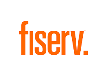

Anthony G
Anthony G My First Coding Assignment

The task of the assignment was to refactor the existing code (improving it without changing what it does) to meet a certain set of standards learned in module 01 of the Bootcamp.
Core Banking System Migration
Core Banking System Migration Project. The main deliveries of this project was to migrate the decentralized banking system to a Centralize Core Banking System. I was the Project Manager for creating the data extractions tools and managing the data migration. This project was done for SDB Bank, Sri Lanka.
Online & Mobile Banking

The scope of this project was to implement and integrate an Online and Mobile Banking platform to the core banking system of Amana Bank, Sri Lanka. I was the Project Manager for this project.